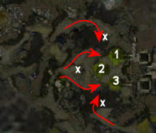

Elite: Enraged Smash
M9a
The Eternal Grove
◉ Mission Map

Click to enlarge · Local cache · Wiki
Summary (click to expand)
Protect the Forever Trees in the Eternal Grove by ensuring that the Tree Singers are able to complete their ritual through the Luxon and Afflicted attacks.
Region: Echovald Forest · Mission: 9a of 13 · Type: Cooperative
Path: Kurzick path
✓ Objectives
Protect the Forever Trees by keeping the Tree Singers alive. You have [12...0] of 12 Tree Singers remaining.
- ADDED: Defeat the Afflicted forces. You have [12...0] group[s] remaining.
→ Walkthrough
As you enter this mission note the additional health display which shows the health status of the three Forever Trees. The trees are located at the points 1, 2 and 3 on the map. There are four Tree Singers grouped around each tree - each singer contributes for one quarter of the tree's health. As the singers take damage the tree will also take damage. If a singer dies the tree is permanently damaged by a quarter; however seeing the bar go down by a quarter does not mean a Tree Singer has died - several could merely be injured, making it look as if one has died. If all four singers of one tree are dead the tree will be also. Only one Tree Singer/tree needs to survive the mission to complete it.
Baron Mirek Vasburg, Danika, and Mhenlo are present as stationary allies. Danika and Mhenlo will heal the party, but you will have no control over them whatsoever and they cannot be resurrected. Their death does not result in a failure of the mission. Danika spawns at the beginning of the mission and is stationed in the middle of the grove. Mhenlo spawns after the intermediate cinematic and is stationed at the north gate.
Three Juggernauts are available to assist you after they have been transformed, and they can be ordered to follow you or defend a spot (talking to them once will set them to follow you, talking to them again will make them defend where they are). While close to a Juggernaut, you will benefit from the Aura of the Juggernaut (which boosts your energy regeneration).
The hill has only two entrances through which opponents can get to the Tree Singers, and is covered by the Aura of the Grove environmental effect, which provides a speed boost while in the area. A good tactic for the first part is for the party to split up into two balanced groups of 4 players (or heroes, if available; note that this split team tactic is very difficult with henchmen), one guarding each gate. Most of the foes in the mission will approach the hill but it is sometimes advantageous or necessary to leave it and engage them outside.
During the second stage of the mission you will be joined by a handful of Luxons plus any that were left alive from the first stage.
Luxon attack
Protecting the Tree Singers while taking out the Siege Turtles is the goal for this stage.
Luxons will attack from all sides, coming down the paths from the north, west and south. Take care not to let any Luxon Elementalists or Luxon Warriors slip through to the Tree Singers, as they can kill the Tree Singers quickly. Luxon Rangers are a comparatively minor threat. At six timed points during this stage, a Siege Turtle will approach from a side path, its arrival announced by Baron Mirek Vasburg. The order of arrival is west, south, north, south, north and west. They will start firing at the Tree Singers if they reach the small hills, marked with X on the map, but the Tree Singers can survive a minimal bombardment and the turtles will soon redirect their fire on a Kurzick team attacking them. Don't let the Luxon Rangers distract you from protecting the Grove - the turtles are the primary threat. Killing the rangers and the two turtles to the west will trigger the cinematic and arrival of the Afflicted. You can optionally leave the rangers and turtles alive to the north and south, as they become additional allies during the Afflicted attack.
If you run a split defense, position your teams at the base of the stairs, to intercept the Luxons as early as possible and minimize travel to the Siege Turtles when they arrive. Otherwise stay in the central area to avoid lengthy runs between Luxon siege positions and only go out of the fort for quick hit-and-run attacks on the turtles.
With heroes, the most effective way to do this is to have a team of three guarding the north entrance. Ideally, this team should consist of a minion master, a healer (skills like heal area will help) and a nuker. Position them quite far forward. Use the minimap and learn the positions of the two entrances so you can re-flag even when they're not visible (they're between the patches of green - zooming in can help). Your team (you plus four heroes) should have high damage output. A team speed boost isn't necessary, but it will definitely help. Your team guards the southern entrance. Dispatch the incoming groups as quickly as possible and constantly look for incoming siege turtles. When you see one, run towards it, kill it, then run straight back to base. Don't be tempted to mop up any other enemies you see running around. Speed is of utmost priority here - use heavy AoE damage and kill the turtles and their guards as quickly as possible. The less time you spend outside the base, the better. It can help if you create spirits dotting the map as these will distract and slow down enemies.
When you see a siege turtle heading towards the northern entrance (this should be the second wave), move your defensive team to the other (southern) gate while you head out north to kill the turtle and any mobs you come across en-route. Again, run back when it's killed. Keep flagging your defensive/base team to whatever entrance is needed while you dispatch the turtles. You may need to help them from time to time, particularly if they're under attack from elementalists.
Grab the Juggernauts as soon as they become available and set them to follow you. With a split defense it is recommended to use two for the south team, one for the north. With them set to follow they will automatically return to you if killed.
There is little doubt that the master's award for this mission is among the hardest in the campaign. It may take several attempts to learn the attack patterns and, with heroes, learn where you need to flag them for optimal positioning. However, it is achievable for teams with balanced skill builds. Thankfully, if you can survive the Luxon attack with all the Tree Singers still alive then the hardest bit is over and the next stage shouldn't pose too many problems.
Afflicted attack
After you have beaten the Luxons, you will be attacked by waves of the more dangerous Afflicted. The Afflicted have no siege attack so you can stay inside the grove. The good news is that the Afflicted will focus more on you and your allies than the Tree Singers, meaning it's easier to simply keep your party together and move between the gates. Splitting your group (especially if you're the only player) is still possible but much more dangerous. The afflicted come in large groups and can very easily overwhelm a group of 3-4 heroes, after which they're free to flank the remaining party members or down the Tree Singers.
The strategy here is similar to the first stage. Split your team to defend the two gates. There's no reason to leave the base. In the case of this mission, the best defence is NOT offence! If you decide to push out, Afflicted can and will get into your base and start attacking the Tree Singers. The stronger team should help the weaker one as soon as they're finished with their group.
If you still want to split your team: the south gate is generally a bit tougher than the north, so if you have a disparity in the two teams, send the better one to the south. (Watch out in particular for the Afflicted Monk's Ray of Judgment, and the Afflicted Elementalist's Mind Burn.) Position your teams well inside the gates, behind the NPC defenders, closer to the NPC healers and the other team. Don't go through the gates unless mopping up. Poor positioning at this stage can lead to mission failure.
The Afflicted will always attack both gates simultaneously, but the strength of the waves varies. The first couple of waves are tougher on the southern gate, while the last few are tougher on the north gate. With the second wave, the southern gate will be attacked by the Afflicted Maaka. If you run a split team, the northern gate will usually be clear quickly, while the southern team may struggle to stay alive. In that case, the northern team should hurry to assist them. In the final wave two warriors will attempt to sneak in the southern door while the north is attacked by the Afflicted Xenxo and Senku, so make sure they are killed first before converging on the two bosses.
★ Bonus
See walkthrough and objectives for bonus details (if any).
◆ Hard Mode
No dedicated Hard Mode section on the wiki — expect tougher foes and adjusted mechanics. See walkthrough notes.
☠ Bosses & Elites
✦ Tips & Notes
Skill recommendations
- A minion master can provide fodder against Luxon or Afflicted mobs; better still, they can help block the gates from enemy incursions.
- At the start of the mission, you can make use of the exploitable corpses left behind by Ex-Redemptor Berta, Klaus, and Lieber as they become Juggernauts.
- Blood of the Master helps to keep minions alive between the waves.
- Trapping at the entrances to the hill area can be effective.
- Bring offensive area of effect (AoE) skills, since mobs will cluster on the stairways and at the gates. However, killing several Afflicted at the same time can cause an AoE spike from multiple Afflicted Soul Explosions.
- A ritualist with Life and Recuperation stationed in the center of the grove will be able to heal all the Tree Singers simultaneously as well as supporting the team.
- A single well-timed Pain Inverter can instantly kill a turtle, even in hard mode.
- Enchantment-based builds are vulnerable to enchantment removal by Afflicted Necromancers and Mesmers. Afflicted that deal physical damage can also remove enchantments when enchanted with Afflicted Necromancer's Order of Apostasy.
- Split team strategy
- Bring party range skills (such as Heal Party or Light of Deliverance).
- Necromancer orders skills can be helpful.
- Offensive binding ritual spirits can be set at each gate by the same caster, as they are far enough apart.
- Defensive spirits such as Shelter can be placed between the gates and reach allies at both gates, making it an ideal location for a Soul Twisting Ritualist. Heroes will typically require manual control to place spirits in this position.
Notes
- It is possible to gain about 2% toward the Canthan Cartographer title track here just by exploring. Flag your NPCs around the trees and explore.
- The mission won't advance to the Afflicted phase if there are still Luxons alive in all three groups outside the gates. You can take advantage of this to explore the map, then kill the Western group completely when you wish to proceed.
- Pet - Elder Reef Lurker as allies won't attack, yet the Luxon Soldiers still use pet attack skills.
- Occasionally, if the Luxon Soldiers die before their pets, the pets will become invulnerable until the corpse of the Luxon Soldier disappears.
- When the final group containing the bosses dies, remaining Afflicted from other groups will immediately die as well and the mission will complete.
- If a Juggernaut dies, it will revive at the Forever Tree that spawned it, provided at least one Tree Singer remains alive at the tree.
- The western Siege Turtle and its group are within longbow range of the western Forever Tree.
- Completion of this mission will fill in page #7 of the Shiro's Return storybook.
- After completion, your party will be teleported to Vasburg Armory.
- You can increase your Kurzick faction cap limit by 7,000 by completing this mission along with Arborstone and Unwaking Waters. This increase can only be applied once per account.
- Siege Turtles and Luxon Rangers on the small hills from groups before the final group will remain hostile after the intermediate cinematic. The Afflicted will still attack them and vice-versa.